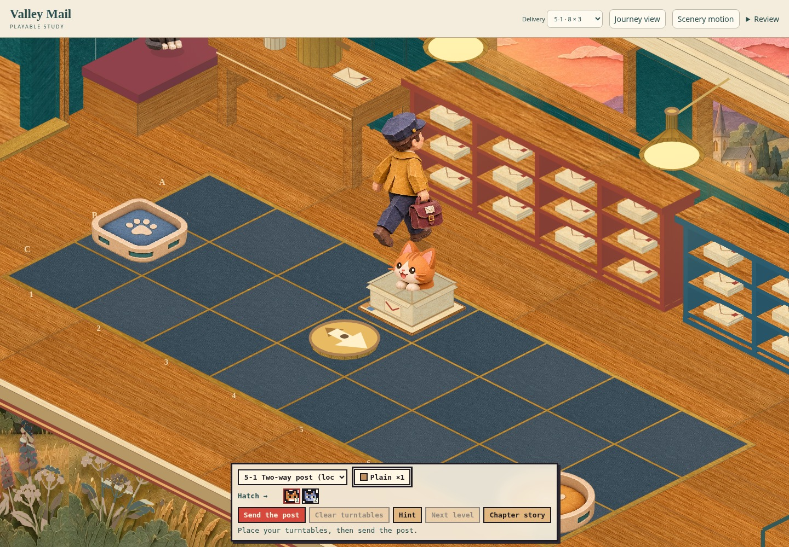
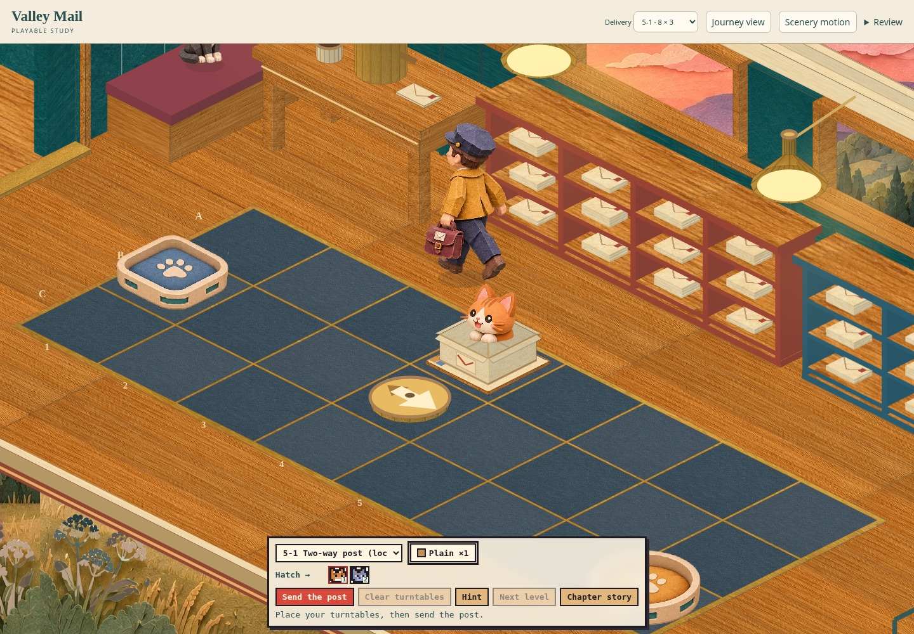

CATS BY POST · MAIL TRAINWalking the right way
The worker now faces along his walk. The earlier pair showed his back in both directions; matching front-facing steps now cover the return journey and the turns towards the viewer.
Returning to the sorting shelves

Before · rear view on the return walkAfter · front view follows his travelOut and back
Both complete walks and the tea stop, shown at2.4× speed. Routes, foot-root positions and routine timings are unchanged.
Walking away towards tea

Departure turns
Original departure speed. Front/rear views and mirroring follow each turn; the desk, trolley and attached coach still obscure the worker correctly.
42 room tests pass, including checks of both walking steps throughout both routes. Original artwork is retained, with one additional front-facing sprite sheet. Gameplay, level data, timing and private study saves are unchanged. Motion clips use sampled browser frames, not a device performance benchmark.